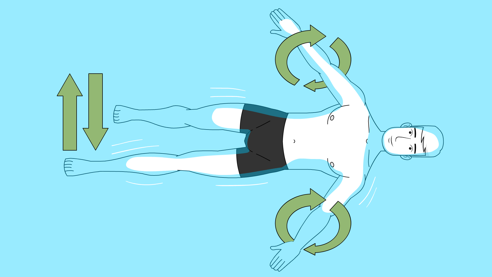
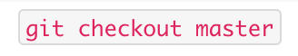
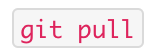
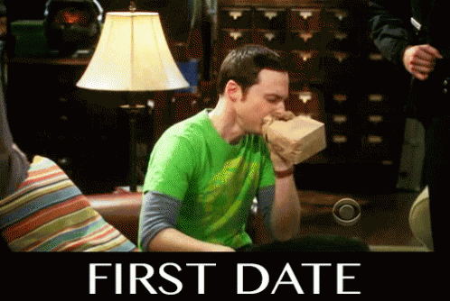
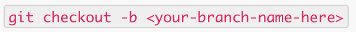
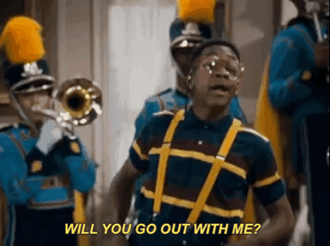
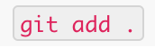
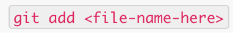
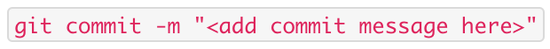
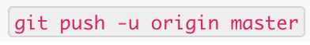

Understanding Git: All You Need is Love && Commit(ment)
A simplified guide to help conceptualize the basic flow of Git commands for Newbs.
Learning to code can be extremely overwhelming. You are likely learning basic internet and computer fundamentals, grappling over JavaScript, and learning how to efficiently use your text editor. Then there is Git….. where, let’s face it, you are pushed into the deep end of adding, committing, pushing and never-ending merge conflicts with an expectation to swim. Now, I am no lifeguard, but let me at least teach you some stroke techniques so you can tread water.

First things first -- Git is NOT Github.
Git is a popular distributed version control system. It allows you to work in a team-based environment with other developers by enabling a non-linear development process.
I STILL DON'T GET IT. HALLLLLP!
Think of it as the opposite of an assembly line - you don’t have to depend on the person in front of you to finish their portion before you can work on yours. Git is a tool that allows developers to be able to make changes simultaneously and then combine all of their work in Master, at the end.
Git’s Core Functionality is to save checkpoints (or commits) you have made within the code base, and share them with other people. Everything about git revolves around this notion.
Creating checkpoints allows a developer the ability to refer back to it whenever they want. This is exceptionally handy when you deploy a new product that ends up creating a bug that critically affects users. Git allows you the ability to roll back the deployment to the previous checkpoint and the developers get a chance to squash the bug and attempt deployment again.
Github, on the other hand, is like a file cabinet - it’s literally a hub that stores your repository and all the code that is sent (or pushed) to it from computers running the Git tool.
Now that you understand what Git is and it’s core functionality, let’s talk about how it works. Below is a simplified guide on the very basic flow of Git commands that you will use frequently in the command-line interface (CLI). These commands show you how to create your own checkpoints and implement your changes to your Master (or desired) branch.
To put these commands into perspective, let’s look at them as stages of commitment in a relationship:
STAGE 1: INFATUATION
“Here’s my number, call me maybe?!”
 &&

You are checking out the person (branch) that you are
interested in getting to know more.
From the main repository (CD into the correct directory), checkout the branch that you want to make a copy of and make changes to (in this blog I will be referring to it as Master, but it could be any branch). You are then going to pull in any changes that have been made recently from your other teammates in Master to your local machine.
Helpful tip: if you think you are already on master (or the branch you want a copy of) `git branch` to double check what branch you are currently on to be extra sure.
STAGE 2: THE FIRST DATE
“Wanna go on a date?”


You are taking
out this person (or creating and checking out this branch)
for the very first time.
This command gives you an exact replica of Master on your local machine and switches over to the replica so you can try some new thangs and build some cool stuff without affecting Master. This replica is called a branch and you can name it whatever you want.
STAGE 3: OFFICIALLY A COUPLE
“Will you be my boo thang?”

There is no git command for this. You are just adding,
eliminating and/or refactoring code in your text
editor.
You are officially dating - you’re trying new
restaurants and texting each other way too much.
You’re diving in! You’re making changes to your replica that you would like to eventually put into master once you’ve got it exactly how you want it.
STAGE 4: SETTLING DOWN
“I might pop the question at some point, but not right
now...”
 OR

You are
settling down but still have time to say “F this” and run
for the hills.
This is called “Staging” - You’re happy with your changes, you want to save them, but you still have the ability to discard your changes before you’re fully committed.
STAGE 5: ENGAGEMENT
“Will you marry me?!” 

You are
engaged, committed, but haven’t said your vows quite yet.
Your new changes are saved and this is your new checkpoint. If you refer back to your checkpoint before this one (your last commit), you will not see any of the changes that you just made. The commit message is important so that others can see what you did and why you did it; think of this as a heartfelt proposal someone might say about what they bring and their future together when they ask someone to marry them.
NOTE: At this time, Git takes a snapshot (or reference) of what all of your files look like at that moment and stores a reference to that snapshot so that you can refer back to in the future, if necessary.
STAGE 6: WEDDING DAY
“I do!”
 AND
Create a Pull Request
It’s
almost official. Today is the big day! And you get to share
the good news with others.
The ‘-u’ allows your branch to be automatically linked with
the specified branch (in our case Master). ‘Git push’ takes
a snapshot of the changes you made and gives it to Master.
Once you have pushed, you can go to github and create
a pull request by doing the following:
- Go to the page for the repository and click on the pull requests tab
- Click the “New Pull Request” Button
- Select the branch you want to submit, and write a summary of what your change explaining what it is intended to do and how it is implemented
The pull request just means that you are asking for permission for your contributions/revisions to be added to the project’s main repository (this is part of Github NOT Git).
After a successful push + approval of pull request, your new code will go into the Master the branc. Your teammates will then be able to view your changes by using ‘git pull’ in the Master branch.
STAGE 7: HONEYMOON
“Honey, we are going to Hawaii!”
CELEBRATE! And repeat steps when you’re ready to make a
new branch and implement new changes.
Understanding how Git works and what it can do for you is extremely important and will save you so much time in the future. It is vital in recovering from merge conflicts, which commonly happens and brings developers a lot of grief.
Welp, there you have it! You are now a git pro!! ...just kidding! There is so much to learn about git and there are developers out there who have been in the field for 10+ years who still have to research what to do for specific things git-related. So, know that you’re not alone and once you interact with git on your own, it begin to click. Meanwhile, tread that water! You got this!!!
Helpful Links:

Sarah Buckingham
I love to find innovative solutions to social problems. Working in Social Work, I’ve seen how tech can help reach vulnerable populations; helping people make more informed decisions, creating ways for people to connect, and giving people access to the tools they need to have agency in their own lives. The myriad of possibilities piqued my interest and so I decided to pursue an education at Fullstack Academy to become a software engineer to put my innovative ideas at play.I am a mother of two VERY strong-willed children, and two rambunctious dogs. When I am not coding, I'm off hiking in the Pacific Northwest, traveling abroad, or have my nose in a captivating book. I have a strong passion for music and a deep love for black and white film photography. I am excited to continue to couple my expertise in Social Work with my passion as a full-stack developer to have a positive and lasting impact on the lives of many.
Learn Digital Skills
Find out when the next cohort begins!
The most comprehensive program to up your game in the remote career world.
Learn More